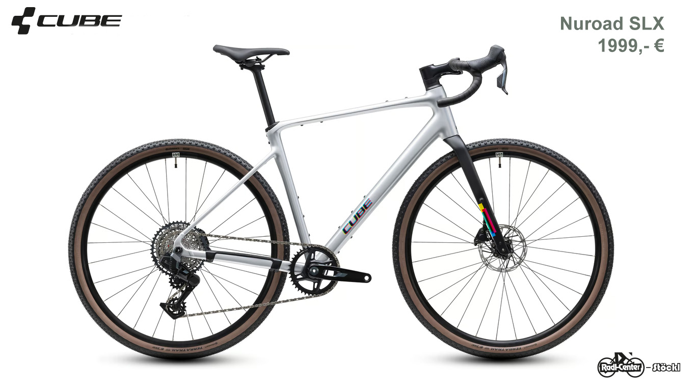
CUBE · Gravel
Nuroad SLX
Gravelbike aus dem veröffentlichten Angebot.
1.999 €Preis laut veröffentlichtem AngebotDieses Modell anfragenEntdecke unsere Fahrradwelt. Welche Modelle und Größen aktuell verfügbar sind, erfährst du direkt bei uns im Geschäft.
Asphalt, Waldweg oder Alltag: Entdecke unsere Fahrradwelt. Dein passendes Rad finden wir gemeinsam vor Ort.
18 Modelle aus den Angeboten und Vorstellungen von Stöckl. Entdecke dein Wunschrad und frage es direkt bei uns an.
Die Auswahl enthält alle in den Angebotsbildern und Modellvorstellungen der Startseite erkannten Modelle. Angebotspreise und Einzelstücke können sich ändern. Bitte frage die aktuelle Verfügbarkeit an. woom WOW ist für 2027 angekündigt; zwei CUBE-Modelle stammen aus Testvorstellungen von 2025.
18 Fahrräder

Gravelbike aus dem veröffentlichten Angebot.
1.999 €Preis laut veröffentlichtem AngebotDieses Modell anfragen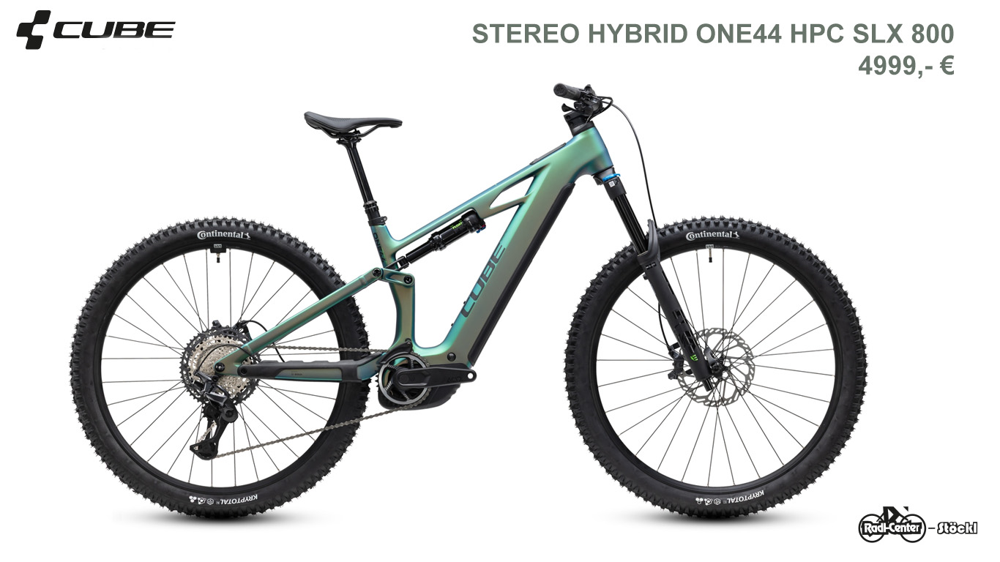
E-Mountainbike mit Vollfederung. Preis im Originalbild nicht vollständig lesbar.
Preis auf AnfrageAktuellen Preis bei uns erfragenDieses Modell anfragen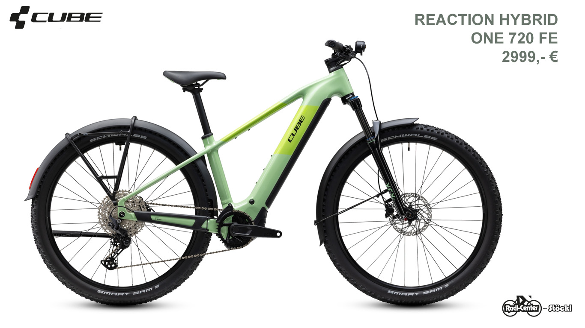
Im Angebot mit Schutzblechen, Licht und Gepäckträger abgebildet.
2.999 €Preis laut veröffentlichtem AngebotDieses Modell anfragen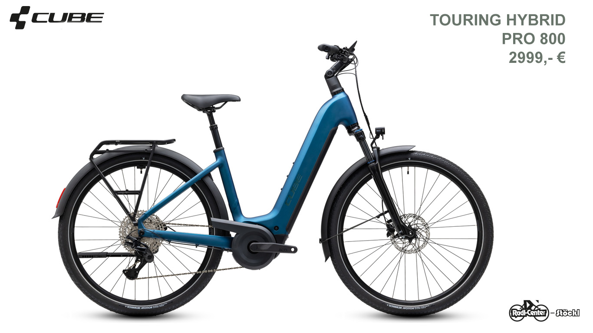
E-Trekkingrad mit tiefem Einstieg.
2.999 €Preis laut veröffentlichtem AngebotDieses Modell anfragen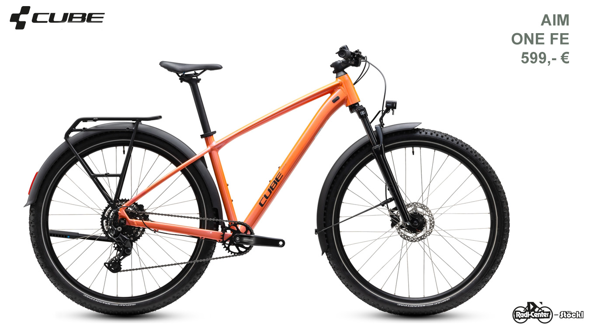
Mit Schutzblechen, Licht und Gepäckträger abgebildet. Preis im Originalbild nicht vollständig lesbar.
Preis auf AnfrageAktuellen Preis bei uns erfragenDieses Modell anfragen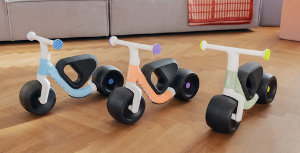
Auf der Website als Neuheit für 2027 angekündigt. Drei Farben; selbstbalancierendes Laufrad.
179 €Preis laut veröffentlichtem AngebotDieses Modell anfragen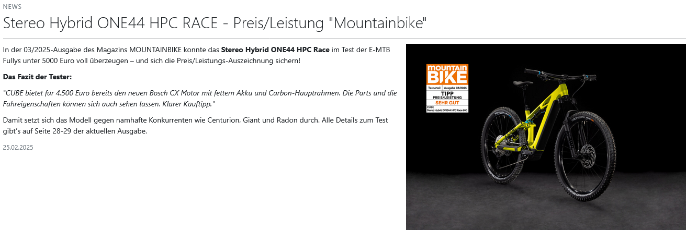
Auf der Website in einem Testbericht von 2025 vorgestellt; kein aktueller Angebotspreis veröffentlicht.
Preis auf AnfrageAktuellen Preis bei uns erfragenDieses Modell anfragen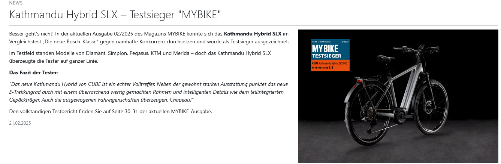
Auf der Website in einem Testbericht von 2025 vorgestellt; kein aktueller Angebotspreis veröffentlicht.
Preis auf AnfrageAktuellen Preis bei uns erfragenDieses Modell anfragen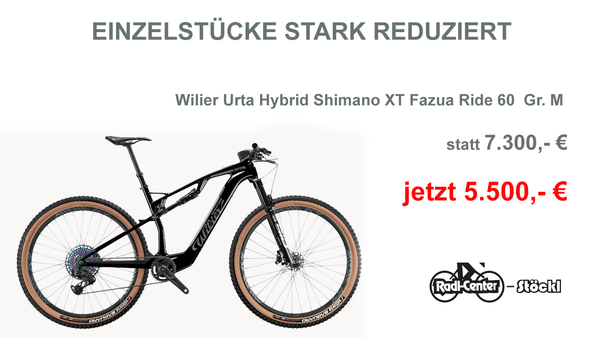
Reduziertes Einzelstück, Größe M laut Angebotsbild.
5.500 €Preis laut veröffentlichtem AngebotDieses Modell anfragen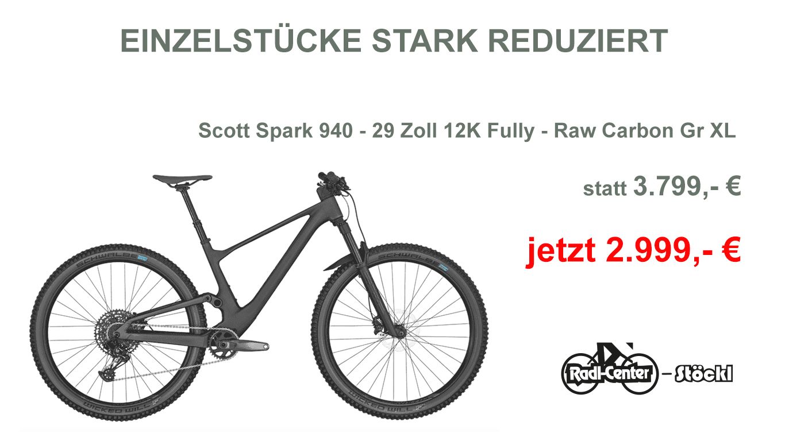
29 Zoll, 12K Fully, Raw Carbon; Größe XL laut Angebotsbild.
2.999 €Preis laut veröffentlichtem AngebotDieses Modell anfragen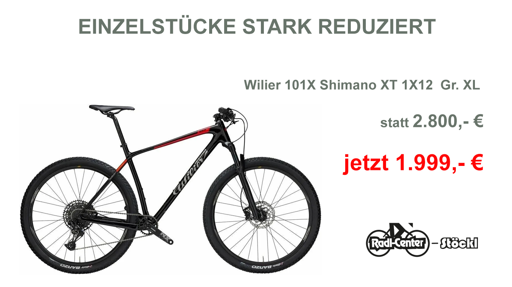
Reduziertes Einzelstück. Preis und Größenangabe im Originalbild nicht vollständig lesbar.
Preis auf AnfrageAktuellen Preis bei uns erfragenDieses Modell anfragen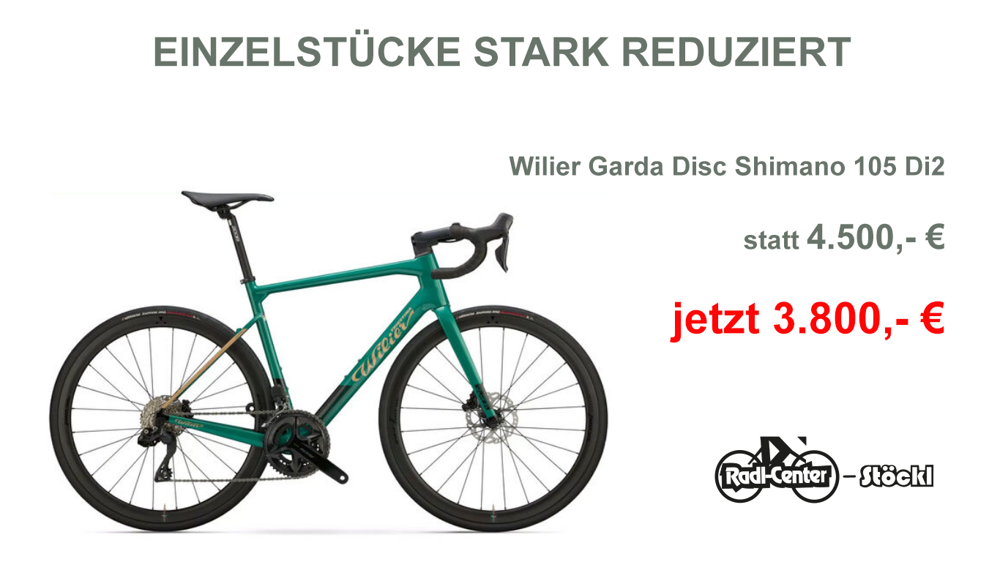
Reduziertes Einzelstück mit Shimano 105 Di2 laut Angebotsbild.
3.800 €Preis laut veröffentlichtem AngebotDieses Modell anfragen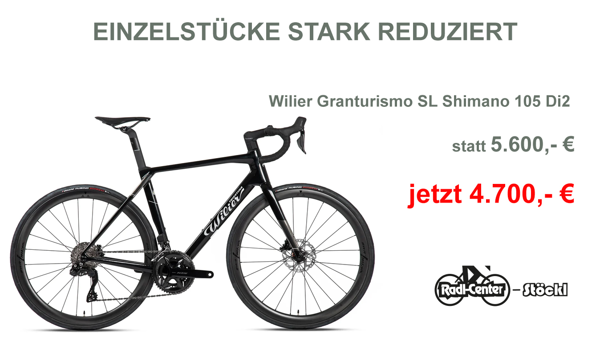
Reduziertes Einzelstück. Preis im Originalbild nicht vollständig lesbar.
Preis auf AnfrageAktuellen Preis bei uns erfragenDieses Modell anfragen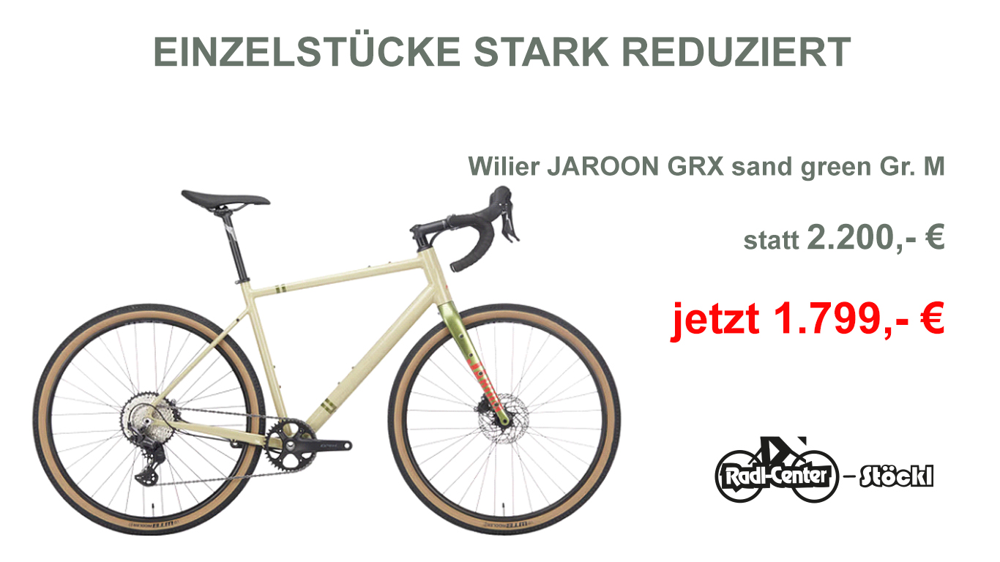
Sand Green; Größe M laut Angebotsbild.
1.799 €Preis laut veröffentlichtem AngebotDieses Modell anfragen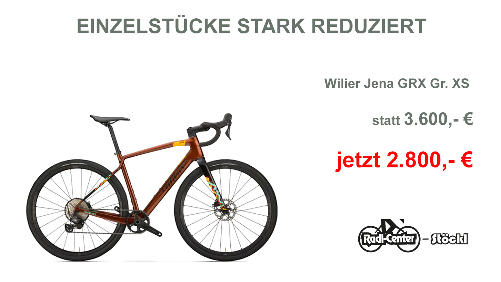
Reduziertes Einzelstück, Größe XS laut Angebotsbild.
2.800 €Preis laut veröffentlichtem AngebotDieses Modell anfragen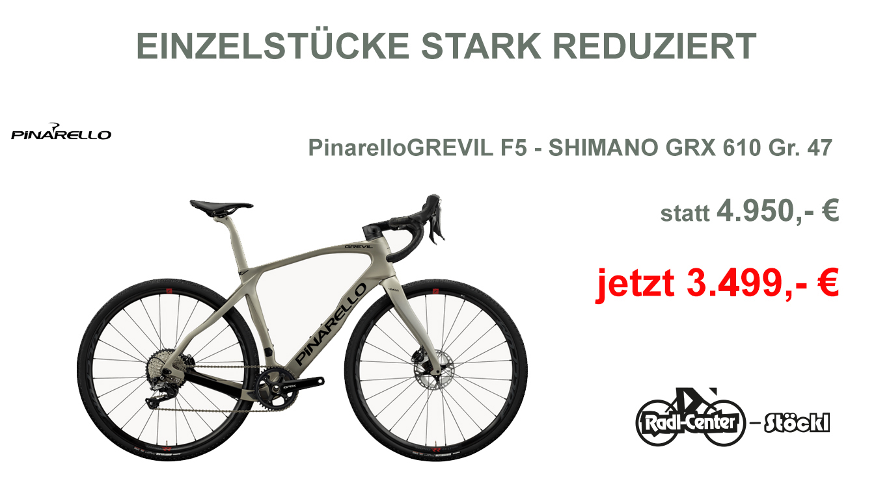
Reduziertes Einzelstück, Größe 47 laut Angebotsbild.
3.499 €Preis laut veröffentlichtem AngebotDieses Modell anfragen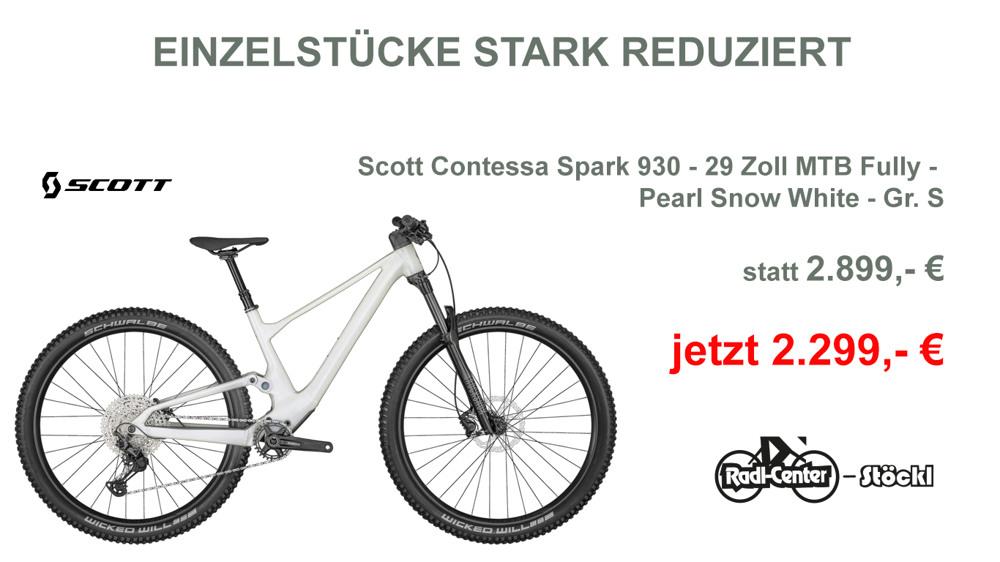
29 Zoll MTB Fully, Pearl Snow White; Größe S laut Angebotsbild.
2.299 €Preis laut veröffentlichtem AngebotDieses Modell anfragen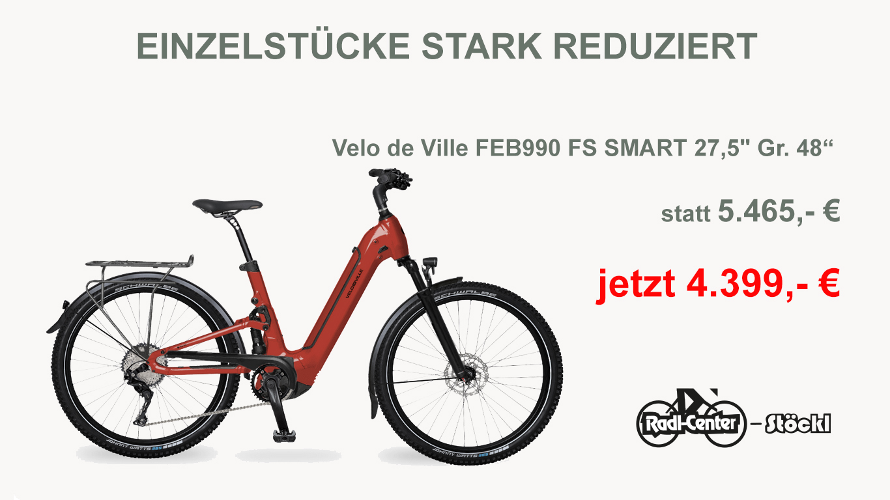
27,5 Zoll; Rahmengröße 48 laut Angebotsbild.
4.399 €Preis laut veröffentlichtem AngebotDieses Modell anfragenFür diese Auswahl ist auf der Website kein konkretes Modell veröffentlicht. Setze die Filter zurück oder frage uns persönlich nach deinem Wunschrad.
Das passende Fahrrad und die richtige Ausstattung gehören zusammen. Lass dich bei uns vor Ort beraten.
Vom ersten eigenen Rad bis zum nächsten Wachstumsschritt: Entdecke Kinderräder, unter anderem von woom, und sprich mit uns über die passende Größe.
Helme, Radbrillen, Sättel und Radbekleidung: Wir helfen dir bei der Auswahl der Ausstattung für deinen Alltag und deine Touren.
Wir beraten dich zu deinen Anforderungen, zur passenden Einstellung und zu Umbauten. Eine Probefahrt hilft dir, dein Wunschrad kennenzulernen.